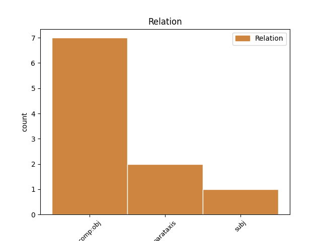
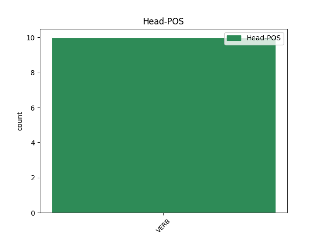
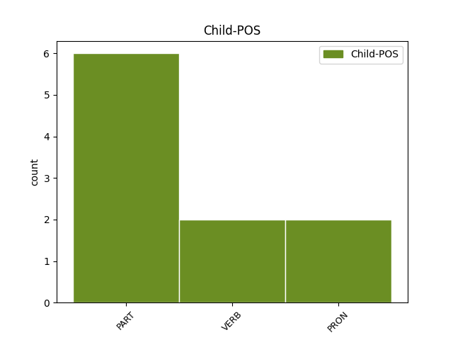

Distribution of features within this leaf



Agreement Rules sorted by frequency.
- When the dependent token is the parataxis(parataxis) of the head token, and the dependent token is VERB.
1 Thuirt _ _ _ _ 0 _ _ _
2 e _ _ _ _ 0 _ _ _
3 riutha _ _ _ _ 0 _ _ _
4 : _ _ _ _ 0 _ _ _
5 “ _ _ _ _ 0 _ _ _
6 Feuchaibh feuch VERB Vm-2p Mood=Imp|Person=2 0 _ _ _
7 an _ _ _ _ 0 _ _ _
8 dorgh _ _ _ _ 0 _ _ _
9 a _ _ _ _ 0 _ _ _
10 nis _ _ _ _ 0 _ _ _
11 , _ _ _ _ 0 _ _ _
12 " _ _ _ _ 0 _ _ _
13 as _ _ _ _ 0 _ _ _
14 esan _ _ _ _ 0 _ _ _
15 , _ _ _ _ 0 _ _ _
16 “ _ _ _ _ 0 _ _ _
17 feuch feuch VERB Vm-2s Mood=Imp|Person=2 6 parataxis _ _
18 dé _ _ _ _ 0 _ _ _
19 gheibh _ _ _ _ 0 _ _ _
20 sibh _ _ _ _ 0 _ _ _
21 . _ _ _ _ 0 _ _ _
22 " _ _ _ _ 0 _ _ _
1 Na na PART Qnm Mood=Imp|PartType=Vb|Polarity=Neg 2 comp:obj _ _
2 tog tog VERB Vm-2s Mood=Imp|Person=2 0 _ _ _
3 ceàrr _ _ _ _ 0 _ _ _
4 mi _ _ _ _ 0 _ _ _
5 idir _ _ _ _ 0 _ _ _
6 , _ _ _ _ 0 _ _ _
7 chan _ _ _ _ 0 _ _ _
8 eil _ _ _ _ 0 _ _ _
9 mi _ _ _ _ 0 _ _ _
10 dèanadh _ _ _ _ 0 _ _ _
11 a-mach _ _ _ _ 0 _ _ _
12 , _ _ _ _ 0 _ _ _
13 le _ _ _ _ 0 _ _ _
14 sùil-air-ais _ _ _ _ 0 _ _ _
15 , _ _ _ _ 0 _ _ _
16 gum _ _ _ _ 0 _ _ _
17 b’ _ _ _ _ 0 _ _ _
18 e _ _ _ _ 0 _ _ _
19 Pàrras _ _ _ _ 0 _ _ _
20 a _ _ _ _ 0 _ _ _
21 bh’ _ _ _ _ 0 _ _ _
22 againn _ _ _ _ 0 _ _ _
23 aig _ _ _ _ 0 _ _ _
24 an _ _ _ _ 0 _ _ _
25 àm _ _ _ _ 0 _ _ _
26 ud _ _ _ _ 0 _ _ _
27 , _ _ _ _ 0 _ _ _
28 ach _ _ _ _ 0 _ _ _
29 bha _ _ _ _ 0 _ _ _
30 dòigh-beatha _ _ _ _ 0 _ _ _
31 sìmplidh _ _ _ _ 0 _ _ _
32 tlachdmhor _ _ _ _ 0 _ _ _
33 aig _ _ _ _ 0 _ _ _
34 a’ _ _ _ _ 0 _ _ _
35 mhórchuid _ _ _ _ 0 _ _ _
36 anns _ _ _ _ 0 _ _ _
37 na _ _ _ _ 0 _ _ _
38 h-àitean _ _ _ _ 0 _ _ _
39 iomallach _ _ _ _ 0 _ _ _
40 ud _ _ _ _ 0 _ _ _
41 ’nam _ _ _ _ 0 _ _ _
42 òige-sa _ _ _ _ 0 _ _ _
43 , _ _ _ _ 0 _ _ _
44 agus _ _ _ _ 0 _ _ _
45 tha _ _ _ _ 0 _ _ _
46 mi _ _ _ _ 0 _ _ _
47 den _ _ _ _ 0 _ _ _
48 bheachd _ _ _ _ 0 _ _ _
49 gun _ _ _ _ 0 _ _ _
50 robh _ _ _ _ 0 _ _ _
51 móran _ _ _ _ 0 _ _ _
52 aige _ _ _ _ 0 _ _ _
53 seo _ _ _ _ 0 _ _ _
54 ri _ _ _ _ 0 _ _ _
55 dhèanamh _ _ _ _ 0 _ _ _
56 ris _ _ _ _ 0 _ _ _
57 a’ _ _ _ _ 0 _ _ _
58 chleachdadh _ _ _ _ 0 _ _ _
59 bho _ _ _ _ 0 _ _ _
60 nòs _ _ _ _ 0 _ _ _
61 a _ _ _ _ 0 _ _ _
62 bh’ _ _ _ _ 0 _ _ _
63 aca _ _ _ _ 0 _ _ _
64 a _ _ _ _ 0 _ _ _
65 bhith _ _ _ _ 0 _ _ _
66 “ _ _ _ _ 0 _ _ _
67 a’ _ _ _ _ 0 _ _ _
68 tarraing _ _ _ _ 0 _ _ _
69 air _ _ _ _ 0 _ _ _
70 an _ _ _ _ 0 _ _ _
71 aon _ _ _ _ 0 _ _ _
72 ràmh _ _ _ _ 0 _ _ _
73 " _ _ _ _ 0 _ _ _
74 . _ _ _ _ 0 _ _ _
Disagree Examples:
1 Nuair _ _ _ _ 0 _ _ _
2 a _ _ _ _ 0 _ _ _
3 cheasnaicheadh _ _ _ _ 0 _ _ _
4 Màiri _ _ _ _ 0 _ _ _
5 esan _ _ _ _ 0 _ _ _
6 , _ _ _ _ 0 _ _ _
7 bhiodh _ _ _ _ 0 _ _ _
8 soillseachadh _ _ _ _ 0 _ _ _
9 eadar-dhealaichte _ _ _ _ 0 _ _ _
10 aige _ _ _ _ 0 _ _ _
11 a _ _ _ _ 0 _ _ _
12 h-uile _ _ _ _ 0 _ _ _
13 turas _ _ _ _ 0 _ _ _
14 ach _ _ _ _ 0 _ _ _
15 daonnan _ _ _ _ 0 _ _ _
16 aig _ _ _ _ 0 _ _ _
17 ceann _ _ _ _ 0 _ _ _
18 na _ _ _ _ 0 _ _ _
19 sgeòil _ _ _ _ 0 _ _ _
20 theireadh teir VERB V-h Mood=Cnd 0 _ _ _
21 e _ _ _ _ 0 _ _ _
22 le _ _ _ _ 0 _ _ _
23 cinnt _ _ _ _ 0 _ _ _
24 " _ _ _ _ 0 _ _ _
25 Bi bi VERB Vm-2s Mood=Imp|Person=2 20 parataxis _ _
26 thusa _ _ _ _ 0 _ _ _
27 coma _ _ _ _ 0 _ _ _
28 . _ _ _ _ 0 _ _ _
1 Agus _ _ _ _ 0 _ _ _
2 cha _ _ _ _ 0 _ _ _
3 robh _ _ _ _ 0 _ _ _
4 sìon _ _ _ _ 0 _ _ _
5 na _ _ _ _ 0 _ _ _
6 b' _ _ _ _ 0 _ _ _
7 fhèarr _ _ _ _ 0 _ _ _
8 na _ _ _ _ 0 _ _ _
9 feuch feuch VERB Vm-2s Mood=Imp|Person=2 0 _ _ _
10 a a PART Qq Mood=Int|PartType=Vb|PronType=Int 9 comp:obj _ _
11 faigheadh _ _ _ _ 0 _ _ _
12 iad _ _ _ _ 0 _ _ _
13 crìoch _ _ _ _ 0 _ _ _
14 a _ _ _ _ 0 _ _ _
15 chur _ _ _ _ 0 _ _ _
16 air _ _ _ _ 0 _ _ _
17 Garaidh _ _ _ _ 0 _ _ _
18 . _ _ _ _ 0 _ _ _
1 Thighearna _ _ _ _ 0 _ _ _
2 , _ _ _ _ 0 _ _ _
3 nuair _ _ _ _ 0 _ _ _
4 a _ _ _ _ 0 _ _ _
5 chuala _ _ _ _ 0 _ _ _
6 Fionn _ _ _ _ 0 _ _ _
7 seo _ _ _ _ 0 _ _ _
8 , _ _ _ _ 0 _ _ _
9 cha _ _ _ _ 0 _ _ _
10 robh _ _ _ _ 0 _ _ _
11 aig _ _ _ _ 0 _ _ _
12 a' _ _ _ _ 0 _ _ _
13 chlaidheamh _ _ _ _ 0 _ _ _
14 ri _ _ _ _ 0 _ _ _
15 fuighleach _ _ _ _ 0 _ _ _
16 beum _ _ _ _ 0 _ _ _
17 fhàgail _ _ _ _ 0 _ _ _
18 gar gar PRON Uq Mood=Int 23 comp:obj _ _
19 bith _ _ _ _ 0 _ _ _
20 có _ _ _ _ 0 _ _ _
21 air _ _ _ _ 0 _ _ _
22 a _ _ _ _ 0 _ _ _
23 bhuailt buailt VERB V-h0 Mood=Cnd|Person=0 0 _ _ _
24 e _ _ _ _ 0 _ _ _
25 . _ _ _ _ 0 _ _ _
1 Agus _ _ _ _ 0 _ _ _
2 sin _ _ _ _ 0 _ _ _
3 nuair _ _ _ _ 0 _ _ _
4 a _ _ _ _ 0 _ _ _
5 dh’fhalbh _ _ _ _ 0 _ _ _
6 iad _ _ _ _ 0 _ _ _
7 leis _ _ _ _ 0 _ _ _
8 a' _ _ _ _ 0 _ _ _
9 chlaidheamh _ _ _ _ 0 _ _ _
10 feuch feuch VERB Vm-2s Mood=Imp|Person=2 0 _ _ _
11 a a PART Qq Mood=Int|PartType=Vb|PronType=Int 10 comp:obj _ _
12 faigheadh _ _ _ _ 0 _ _ _
13 iad _ _ _ _ 0 _ _ _
14 a’ _ _ _ _ 0 _ _ _
15 cheàrdach _ _ _ _ 0 _ _ _
16 Idhe _ _ _ _ 0 _ _ _
17 . _ _ _ _ 0 _ _ _
1 Thuirt _ _ _ _ 0 _ _ _
2 e _ _ _ _ 0 _ _ _
3 ri _ _ _ _ 0 _ _ _
4 mhàthair _ _ _ _ 0 _ _ _
5 gu _ _ _ _ 0 _ _ _
6 robh _ _ _ _ 0 _ _ _
7 e _ _ _ _ 0 _ _ _
8 ' _ _ _ _ 0 _ _ _
9 dol _ _ _ _ 0 _ _ _
10 a _ _ _ _ 0 _ _ _
11 dh’fhalbh _ _ _ _ 0 _ _ _
12 feuch feuch VERB Vm-2s Mood=Imp|Person=2 0 _ _ _
13 a a PART Qq Mood=Int|PartType=Vb|PronType=Int 12 comp:obj _ _
14 faigheadh _ _ _ _ 0 _ _ _
15 e _ _ _ _ 0 _ _ _
16 cosnadh _ _ _ _ 0 _ _ _
17 'na _ _ _ _ 0 _ _ _
18 bhuachaille _ _ _ _ 0 _ _ _
19 air _ _ _ _ 0 _ _ _
20 fearann _ _ _ _ 0 _ _ _
21 . _ _ _ _ 0 _ _ _